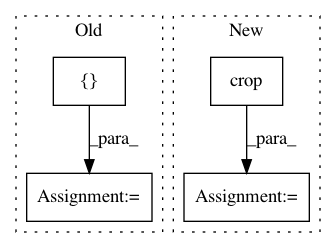

b4bfb0de9c7237c9d404d5565f6d77c21bec5b48,skimage/morphology/watershed.py,,watershed,#Any#Any#Any#Any#Any#Any#,149
Before Change
marker_locations, flat_neighborhood,
c_mask, image_strides, compactness,
c_output)
c_output = c_output.reshape(c_image.shape)[[slice(1, -1, None)] *
image.ndim]
try:
return c_output.astype(markers.dtype)
except:
return c_output
After Change
mask, image_strides, compactness,
output.ravel())
output = crop(output, pad_width, copy=True)
return output
In pattern: SUPERPATTERN
Frequency: 3
Non-data size: 4
Instances
Project Name: scikit-image/scikit-image
Commit Name: b4bfb0de9c7237c9d404d5565f6d77c21bec5b48
Time: 2016-08-24
Author: juan.n@unimelb.edu.au
File Name: skimage/morphology/watershed.py
Class Name:
Method Name: watershed
Project Name: analysiscenter/batchflow
Commit Name: 11c6bf1dbd051d087519ff771b39dac600c0d96d
Time: 2019-07-29
Author: 7520522+a-arefina@users.noreply.github.com
File Name: batchflow/models/tf/encoder_decoder.py
Class Name: EncoderDecoder
Method Name: head
Project Name: geometalab/OSMDeepOD
Commit Name: a59e0476e44ee53a62a103c95f542ff8b8f7ff06
Time: 2015-09-30
Author: samuel.kurath@gmail.com
File Name: out/production/OSM-Crosswalk-Detection/service/ImageGenerator.py
Class Name: ImageGenerator
Method Name: generate